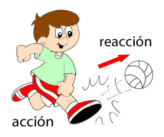

Tercera Ley de Newton

También conocida como la Ley de Acción y Reacción, es la tercera de las leyes fundamentales del movimiento formuladas por Sir Isaac Newton en el siglo XVII. Esta ley describe la relación entre las fuerzas que actúan entre dos objetos en una interacción. La Tercera Ley de Newton se formula de la siguiente manera:
"Por cada acción hay una reacción igual y opuesta."
A continuación, profundicemos en los conceptos clave relacionados con la Tercera Ley de Newton:
Pares de fuerzas: La Tercera Ley establece que cada vez que un objeto A ejerce una fuerza sobre un objeto B, el objeto B ejerce una fuerza igual en magnitud pero en dirección opuesta sobre el objeto A. Estas dos fuerzas se denominan "par de fuerzas de acción y reacción". Por ejemplo, si empujas una pared con una cierta fuerza, la pared ejerce una fuerza igual en magnitud en dirección opuesta sobre ti.
Interacciones recíprocas: La Tercera Ley implica que las interacciones entre objetos siempre se producen en pares de fuerzas igualmente magnas y opuestas. Esto significa que si un objeto ejerce una fuerza sobre otro objeto, el segundo objeto responderá con una fuerza igual y en sentido contrario sobre el primero.
Aplicaciones comunes: La Tercera Ley de Newton es evidente en muchas situaciones cotidianas. Por ejemplo, cuando caminas, tus pies aplican una fuerza hacia atrás sobre el suelo (acción) y el suelo aplica una fuerza igual hacia adelante sobre tus pies (reacción), lo que te permite avanzar. De manera similar, en la propulsión de cohetes, los gases expulsados hacia atrás generan una fuerza de acción que impulsa el cohete hacia adelante debido a la fuerza de reacción igual y opuesta.
Conservación del momentum: La Tercera Ley también está relacionada con la conservación del momentum. Cuando dos objetos interactúan entre sí, la cantidad total de momentum en el sistema se conserva, lo que significa que la suma de los momentos antes de la interacción es igual a la suma de los momentos después de la interacción. Esta conservación del momentum es una consecuencia directa de la Tercera Ley de Newton.